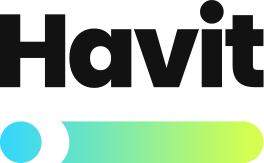

HAVIT — AI Weight Loss Coach
Small steps today shape a lifetime of change.
HAVIT, your AI coach, helps you build a healthier life.
Experience an AI coach built on the know-how of Juvis Diet alumni.
Scan with your phone camera to install.